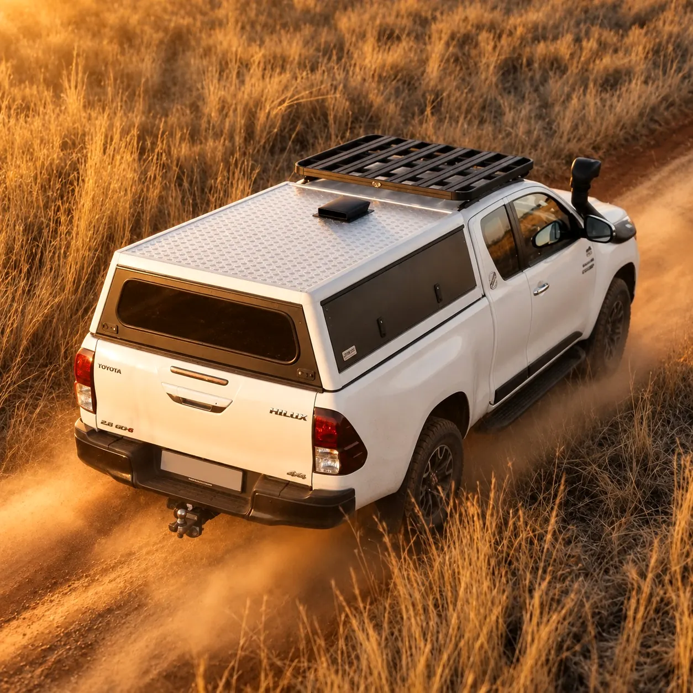
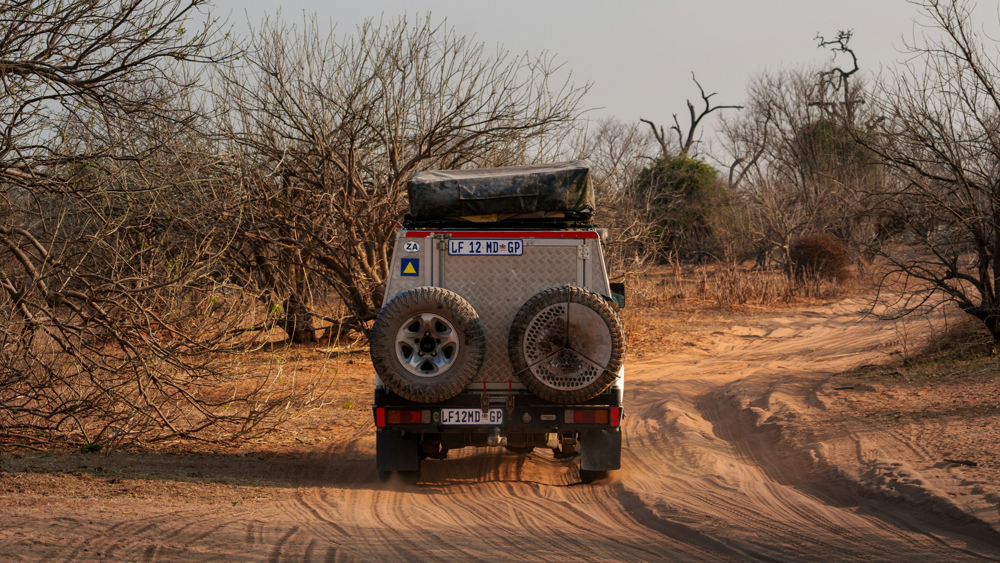
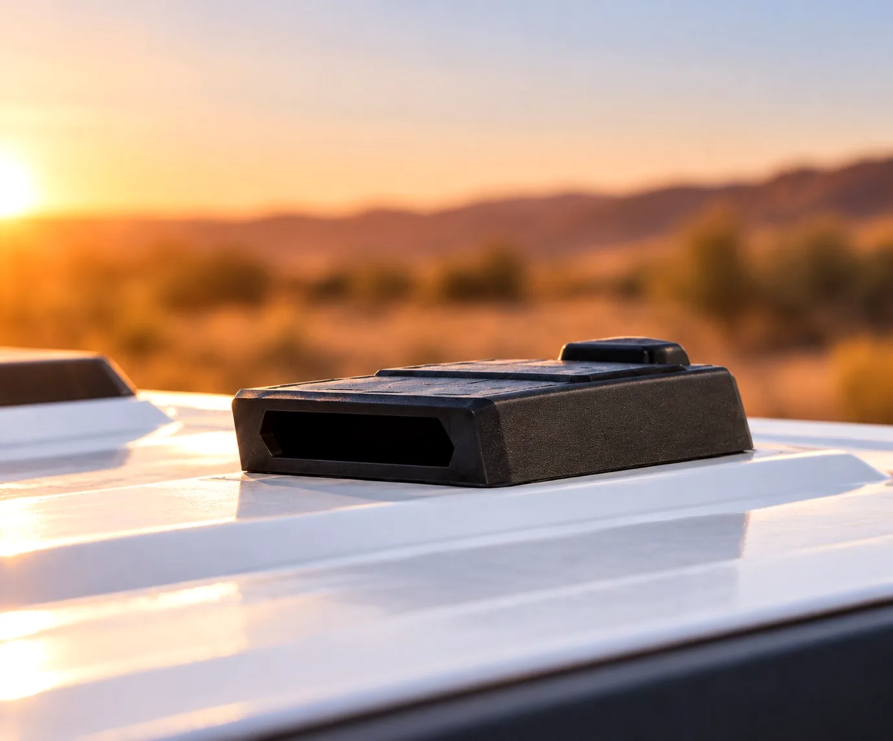

Canopy ventilation for dusty roads
Leave the dust behind.
Smarter airflow designed to help keep dust out of your canopy, so you can focus on the journey ahead.
The problem
Dust should stay out there.
On a South African gravel road, a fine cloud follows the bakkie. That dust can work its way into a canopy, settle on camping gear, and still be there after the road has changed.
It is a familiar frustration for anyone who travels with a canopy: more time spent clearing dust, and less of the trip left for the journey itself.
The solution
Airflow for dusty-road adventures.
Autonovent is a compact, self-contained air vent that mounts on the canopy roof, around the middle-front. It is designed to help reduce dust ingress while you travel.
-
Less dust inside
Designed to help reduce dust entering the canopy on dusty roads. It does not make a canopy dustproof.
-
Made for the road
Intended for gravel travel, overlanding, and the dusty conditions that follow a 4x4.
-
Compact on the canopy
About the size of an A4 sheet, mounted around the middle-front of the canopy roof.
-
More of the journey
Less dust to deal with at the end of a gravel road, so more of the trip stays enjoyable.
How it works
Smart airflow. Automatic protection.
Autonovent opens while you drive so air can be drawn outward from the bakkie canopy. That airflow is designed to help create negative pressure and reduce dust in the load space. The vent closes when you stop, and when rain or moisture is detected.
It does not make a canopy dust-free or waterproof. No manual adjustments are needed.

Built for the journey
Built for the roads that take you further.
Autonovent is for bakkie canopy travel on dusty roads: 4x4 touring, long gravel tracks, and the hours when dust hangs in the air behind you.
Lifestyle photograph of a vehicle on a dusty track. It does not show Autonovent, and it is not an installation image.
The unit
A compact vent, purpose-built.
Autonovent is a small, self-contained unit, about the size of an A4 sheet. It mounts around the middle-front of the canopy roof, with the front opening as the air intake.
